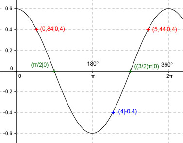

Aufgabe 156 Ergänzen Sie die Wertetabelle für x zwischen 0 und 2π: y = 0,6 cos x x 4 0,84 oder 5,44 y -0,4 0,4 Amplitude = 0,6 ; Periode = 2π Berechnung der Nullstellen: 0,6 cos x = 0 ---> x = π/2 + k * π und k = 0, 1 --> x1 = π/2 oder x2 = (3/2)π N1 liegt bei π/2 oder 90°, N2 bei (3/2)π oder 270°.  Funktionswert an einer Stelle x ermitteln: x = 4 f(4) = 0,6 cos 4 = 0,6 cos 229,2° = -0,4 gerundet. Berechnung der x-Werte für y = f(x) = 0,4: f(x) = 0,4 eingesetzt, existiert einmal zwischen 0 und π bzw. 0° und 180° und zwischen π und 2π bzw. 180° und 360° (siehe Graph). 0,6 cos x = 0,4 |:0,6 --> cos x = 0,667 --> x = arc cos 0,667 = 0,84 gerundet --> x1 = 0,84 oder x2 = (2π - 0,84) = 5,44 gerundet und α1 = 48,1° oder α2 = 311,9°.